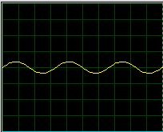
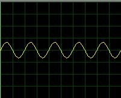
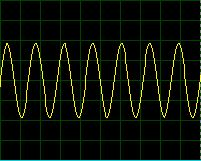
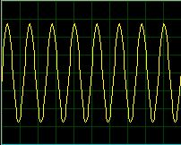

Ressonância 2
Achando a frequência de ressonância
Neste documento irei explicar em como achar a frequência de ressonância de um capacitor e um indutor colocados em paralelo ou em série, formando um Tanque LC.
Quando o tanque LC está com seus componentes associados em série, quando em ressonância sua Impedância (Resistencia em corrente alternada) é idealmente 0 Ohms. Quando seus componentes estão associados em paralelo, sua impedância é idealmente infinita. Podemos observar esse efeito nos gráficos simulados abaixo:
(Simulação R=1k L=1mH C=10nF Fres=50.3kHz)
Indutor e capacitor colocados em paralelo, a impedância é idealmente infinita logo a tensão sobe e a corrente cai no ponto de medição
{kind=link}
Indutor e capacitor colocados em série, a impedância é idealmente zero logo a tensão cai e a corrente sobe no ponto de medição.
Agora, como podemos usar essa informação para achar a frequência de ressonância? Há varios meios, mas vou citar dois meios simples que uso para medir as frequências de ressonância.
Medindo frequência de ressonância através de um osciloscópio e um gerador de função
Com um osciloscopio e um gerador de função, qualquer um que saiba usar estes dois equipamentos conseguirão achar a frequência de ressonância de um Tanque LC. Ligue o tanque LC e os equipamentos como no esquema abaixo:
Repare que há um resistor em serie, ele é absolutamente nescessário, pois forma um divisor de tensão com o tanque LC. Eu geralmente uso o valor de 470R, mas qualquer coisa entre 270R e 10k pode ser usado.
Ligado tudo conforme o esquema, é hora de testar. Acerte o gerador de função para uma tensão entre 5V e 12V e acerte o osciloscopio para medir algo em torno do mesmo. Vá variando a frequência no gerador de função e ao mesmo tempo conforme for ficando invisivel a onda no osciloscópio, vá diminuindo o periodo da medição dele. Você poderá observar que quando estiver se aproximando da ressonância a tensão começara a subir até o seu ponto máximo na frequência de ressonância. Após isso a tensão começara a cair da mesma maneira. Darei um exemplo:
Fiz um teste com um tanque LC de frequência de ressonância conhecida 160khz e fui fazendo o que eu falei, os meus resultados foram estes:

Resultado á 60kHz

Resultado á 100kHz

Resultado á 140kHz

Resultado á 160kHz
Resultado á 180kHz
Como podem reparar, conforme fui aproximando dos 160kHz a amplitude da senóide foi aumentando até seu ponto maximo em 160kHz. Após isso começou a cair novamente, assim como mostra o resultado á 180kHz. Assim quando a tensão parar de subir e começar a descer, você sabe que chegou na frequência de ressonância. Então é só olhar o valor no gerador de função e anotar :D
Medindo frequência de ressonância sem osciloscópio e sem gerador de função
Ok, com osciloscópio é facil... Mas e se eu não tenho acesso a um osciloscópio (é um equipamento caro e nem todos tem acesso a um) e a um gerador de função?
Você também pode descobrir a frequência de ressonância sem eles, mas para isso terá de montar um pequeno circuito:
Este circuito é basicamente um oscilador RC atuando como um gerador de função, e dois LEDs em antiparalelo para a medição da frequência de ressonância.
Como funciona então? Simples!
Quando o circuito LC entra em ressonância, sua impedancia é idealmente infinita certo? Logo não flui corrente e os LEDs ficaram apagados. Quando ele estiver fora da frequência de ressonância os LEDs estarão acesos. Na pratica, os LEDS não apagarão completamente pois a impedância não vai ser estavel. Porém certamente haverá uma queda drastica no brilho do LED e você saberá quando estiver em ressonância.
Ok, está em ressonância, como faço para saber em que frequência está?
Há dois métodos para se descobrir. Um é ligar um multimetro ou frequêncimetro no ponto marcado como Frequency Counter para a medição da frequência (método recomendado). O outro é calcular a frequência do oscilador RC. A fórmula é simples e da para fazer no papel rapidamente.
Idealmente a constante de tempo de um oscilador RC é f = 1 / RC - Porém o datasheet do 74HC14 diz uma formula parecida com uma constante a mais para melhor precisão dos dados reais. Então a formula usada será:
F = 1 / 0.8 * R * C
Onde R será em Ohms, C em Farads, F em Hertz.
Conclusão:
Medir a frequência de ressonância não é tão dificil quanto parece, porém há varios métodos que podem ser usados, e os viáveis vão depender muito do que você vai dispor para fazer a medição. Antes de fazer a medição veja tudo que você dispõe para depois ver qual o melhor jeito. Boa sorte!

Esta obra de EnergyLabs Brasil, foi licenciada com uma Licença Creative Commons - Atribuição - Partilha nos Mesmos Termos 3.0 Não Adaptada.
Permissões adicionais ao âmbito desta licença podem estar disponíveis em http://www.energylabs.com.br.